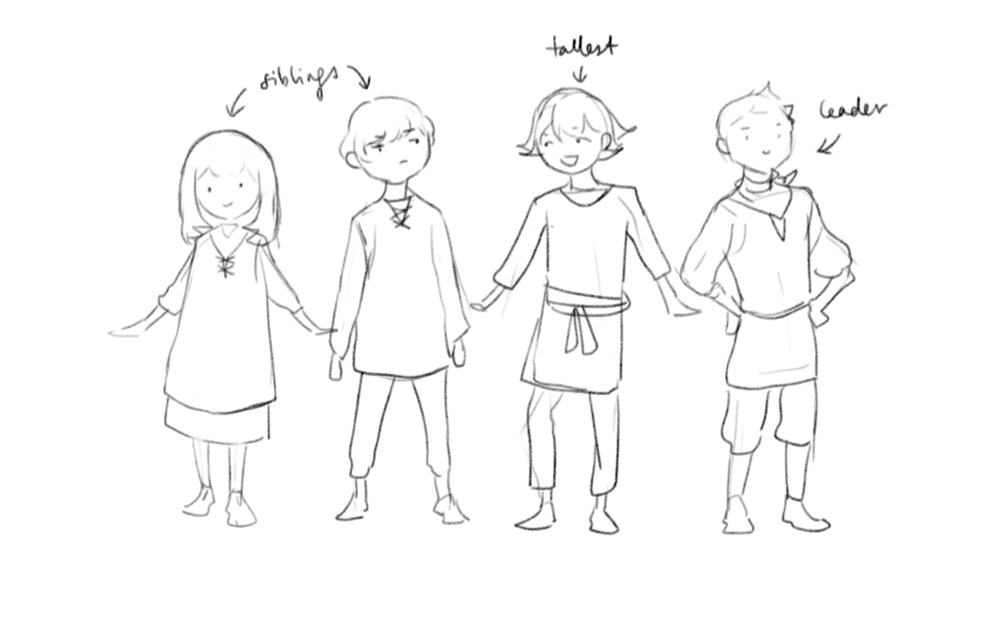

Creation Notes
Before it All
I had two characters and I wanted to write a story about them. It originally started out as some long epic melodramatic fantasy with too many plot holes :p
At any rate, the period before I officially began drawing this comic is murky and full of dangerous secrets. I wrote about it in a blog post some time back! If you dig far enough into my old art you'll find the artefacts of this dark past.
---------My biggest inspiration for creating this comic was the stories of Robin Hobb (especially the Farseer and Tawny Man trilogies. Those books changed my life). Megan Whalen Turner's Queen's Thief series introduced me to the wonders of court intrigue and witty dialogue. I've read those stories again and again. I love them still.
Art-wise, I was greatly influenced by Old Xian's Clown Danny. She's known for drawing a BL webcomic now, but before that she produced an absolutely gorgeous and intricate long-form comic that was never translated to english. I managed to grab a copy of each volume while visiting China. They now follow me wherever I go.
Whenever I'm stuck with storytelling, I refer to April's Song of the Long March. She's a rare comic artist with impeccable command of composition and pacing. The MC is an awful Mary Sue, but I fell in love with the worldbuilding and intricate plot and handsome husbandos anyway. Last I heard, she was making a lawsuit against her studio head and had put the series on hiatus. I'm still waiting for the story to continue...
Prologue
I distinctly remember drawing the first page in March, 2015. Back then I had about 70% of the story in my mind - the beginning, the end, and some important bits in between.
Since I wasn't much good at digital inking then, I drew all the pages on A4 paper with a 0.3 mechanical pencil. Producing that stack of comic pages was pretty satisfying! Those were good times.
The idea of a countdown came from John Scalzi's Redshirts. I knew it would come in handy a few chapters down the road...
Chapter 1
In my original plan, Chapter 1 was supposed to cover everything up to Aelis' fight with Marcos. Of course, when I drew the storyboard, I realised that really wasn't going to happen.
There isn't much happening in this chapter, though I did squirrel away clues here and there. I think the general mood of these early chapters is "something is moving beneath the surface but we don't know what it is".
Chapter 1.5
Despite its short length, this was a landmark chapter that determined where the rest of the story would go. I was vacillating between a simple straightforward story and a longer, more symmetrical one. By the end of this chapter I had committed myself to the latter.
Looking back, that was a good decision. If it were a straightforward story I would have lost interest a long time ago! With a longer story I could spend more time exploring the world and the characters, which makes the process a much richer one.
Chapter 2
Originally this chapter was 7 pages long and Marc was an asshole. After redrawing the storyboard 4 times and expanding it to 40 pages I decided he was a nice person after all (actually he's my second favourite person in the entire story).
I had just begun my medical course while drawing this chapter, and for a couple of months I was so overwhelmed with work I couldn't find the time to draw. During that time my drawing skills got pretty rusty so art quality in this one was could have been better :'D
Chapter 3
This chapter wasn't supposed to exist, but I thought that later events in the story would appear forced without a copious amount of foreshadowing.
This was also the first chapter in which Verre displayed his obnoxiously flirtatious side. This chapter helped me get a better handle of Verre's personality and really influenced how I wrote about him later on.
Chapter 4
This was the last chapter I drew with pencil on paper. The royal siblings are important characters in their own right, but I won't be returning to their story until much later. My BFF Bel was the one who picked the name for the boy king. I think it's a very pretty name :)
Chapter 5
I only realised I could use reference pictures when I had almost finished the chapter... After that I started putting in a lot more effort into researching backgrounds.
I'm quite pleased with the city view at the beginning of the last scene. I spent three days copying it from Taschen's Cities of the World.
Chapter 6

I went all out for the art for this chapter. Above are the patterns that were on the carpets and tapestries... I really like arabic geometric patterns, hopefully I'll learn to draw them someday!
This was a chapter not in my original plan, but I wanted to build the tension and tie up some loose ends.
Chapter 7
I've always struggled between my vision and what I could actually achieve, but in this chapter I felt that the two were starting to come together :)
This is the tapestry in the king's audience room. Yes she's naked yes that's a unicorn no you can't see them in the comic.
Chapter 7.5
While drawing this chapter, I was worried that people would misunderstand their relationship, and have certain expectations for the rest of the story.
So... if I had to explain, what happens in this chapter serves to contrast with the final state of their relationship at the end of the story. It touches upon one of the issues I wanted to explore - the relationship between physical intimacy and genuine connection.
If I write any more I'll be spoiling, so I'll leave it here. As I like to say, it's all in the later chapters!
Another story
You know you're overinvesting in a side story when you give names and personalities to every side character.
My favourite child is Carrot. Who's that? It should be clear when you read the chapter.
The scenery in this chapter is inspired by the English countryside, although the location names come from southern Spain! Ronda is a town in the middle of the mountains. I travelled there right after drawing this chapter, and the scenery was absolutely breathtaking.
My main reason for drawing this long side story was so that people could understand Marcos better. He's the most husbando character so please give him your love ♡
Chapter 8

It was challenging to figure out how their dynamic had changed after the incident in Chapter 7.5. I sat and thought long and hard about what I would do if another girl kissed me. Probably scream and run away??? I had to write this chapter several times before it flowed smoothly. Sometimes I need to remind myself not to project myself too much on my characters xD
In the original version of the chapter, Verre meets Malton to deliver a threat. But now it seems to have become a negotiation. Verre has mellowed a lot since my initial conception of the story... and Aelis has become a lot fiercer. But considering their backgrounds, this development makes sense.
------------------The second half of this chapter took a good long while to complete, as I was writing my senior thesis / studying for exams / traveling during the same period. I did manage to graduate with first class honours, so it was worth it! :)
The new character was designed by my bff in 2015, back when I was drawing the first chapter. She calls him 'Baby' so that's how I'll refer to him until his name is officially revealed.
My original conception of Baby was like Charles Grey of Kuroshitsuji, except more deranged. After my friend gave him a makeover, I found him a lot more likeable, and gradually re-imagined his role in the story. He's now a hidden main character of the story, and I hope to do him justice!
I've always found evil antagonists and righteous protagonists boring, because real people are much more complex than that. Personally, I find Baby to be a more relatable character than Aelis, though it'll be interesting to see what readers think of each character as the plot unravels.
Chapter 8.5
A very short interlude. I won't explain too much, if you've read all the chapters in one go you'll see where this is heading...
Chapter 9
Compared to previous chapters, when working on this one, I definitely made speed more of a priority. I wanted to have a bit more momentum so that each chapter doesn't take so long to finish.
Chapter 8's colour scheme didn't sit well with me, so I tried to improve the colour scheme in this chapter. It was a big struggle , until I recalled James Gurney's gamut masking trick (google it if you don't know what it is, especially if you draw!). I created a new colour scheme using that technique, which made things much easier on the eye. It also meant that I had to recolour half the chapter, but the effort was well worth it. I'm quite happy with how this chapter looks.

{kind=link}
{kind=link}
{kind=link}
{kind=link}
{kind=link}
{kind=link}
{kind=link}
{kind=link}
And with this chapter, we're nearing my favourite parts of the story... *rubs hands excitedly*